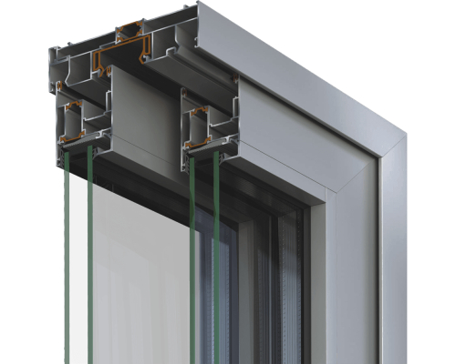
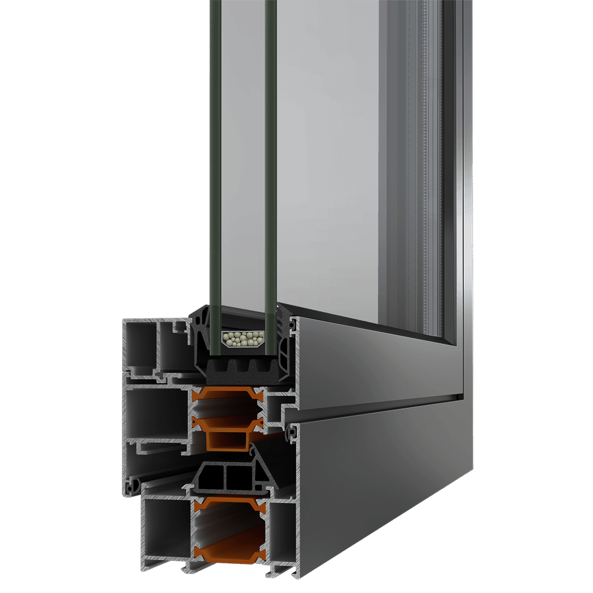
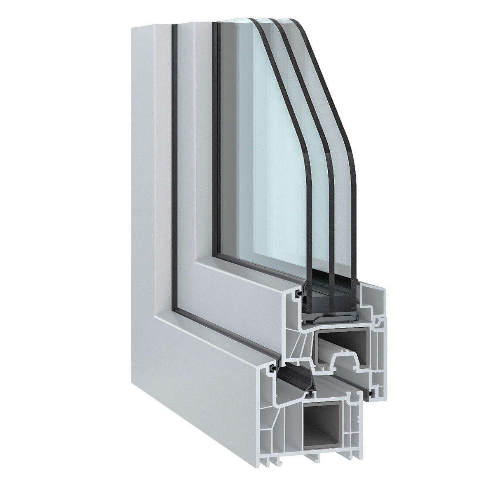

PVC Stolarija
PVC je najčešće korišćeni materijal za izradu prozora. Zbog odlične vrednosti za novac i veoma dobih termoizolacionih svojstava, PVC je često izbor broj jedan za prozore.
Novi prozori pružaju dodatnu udobnost u kući. Njihov dizajn i korišćeni materijali pružaju veoma efikasnu zvučnu izolaciju. Dva nivoa zaptivanja takođe sprečavaju promaju
čak i kada vetar jako duva napolju. Pored toga, optimalna transparentnost modernog izolacionog stakla omogućava veću svetlost nego ikada ranije.
Postao je popularan materijal za prozore i vrata jer ne trune, ne ljušti se, ne rđa, ne raspada i otporan je na vremenske uslove. Takođe je otporan na udare što doprinosi
njegovoj bezbednosti, kao i mogućnost da zadrži svoj oblik u okviru normalnih klimatskih temperatura. Naši PVC prozori se mogu prilagoditi u različitim stilovima kako bi
odgovarali eksterijeru vašeg doma tako da možete uživati u novim poboljšanim prozorima bez ugrožavanja izgleda vašeg doma. Nudimo niz moja koje možete izabrati, uključujući belu,
ružino drvo, svetli hrast, starinski hrast, crnu, sivu i krem.
ALU Stolarija
Aluminijumski prozori ispunjavaju najviše zahteva u pogledu kvaliteta i nude brojne prednosti: visok stepen stabilnosti, energetsku efikasnost, povećanje vrednosti,
niz završenih obrada, uske vidne linije okvira, nesmetan rad, minimalno održavanje i dug radni vek. Sa aluminijumskim prozorima stvarate kvalitet života - za ceo život.
Za dekoraciju aluminijumskih proizvoda koristimo boje u prahu, tako da je raspon boja, stepena sjaja ili izbor teksture veoma širok jer možete birati od imitacije bronze
do teksture drveta. Aluminijumski prozori nisu ogranični svojom veličinom i oblikom. Odgovaraju svim stilovima i bilo kom eksterijeru.
Ovo su neki od najtraženijih profila

| Model profila |
S650 |
| Dubina krila |
65mm |
| Minimalna vidljiva visina |
108,5mm |
| Tip stakla |
dvoslojno |
| Maksimalna debljina stakla |
22 do 45mm |
| Mehanizam |
podizno-klizni |
| Minimalna visina praga |
skriveni nizak ram |
| Redukcija zvuka |
38dB |
| Težina krila |
do 300kg |
| Vodonepropustljivost |
Klasa E1 200 |
| Propustljivost vazduha |
Klasa 4 |

| Model profila |
S67 |
| Dubina krila |
75mm |
| Minimalna vidljiva visina |
93mm |
| Tip stakla |
dvoslojno-troslojno |
| Maksimalna debljina stakla |
do 58mm |
| Mehanizam |
euro-žleb, euro-jezgro |
| Minimalna visina praga |
13mm |
| Redukcija zvuka |
45dB |
| Težina krila |
do 180kg |
| Vodonepropustljivost |
Klasa E1 500 |
| Propustljivost vazduha |
Klasa 4 |

| Model profila |
Salamander-Brugman |
| Dubina krila |
73mm |
| Minimalna vidljiva visina |
98mm |
| Tip stakla |
dvoslojno-troslojno |
| Maksimalna debljina stakla |
24 do 42mm |
| Mehanizam |
okrentno-nagibni |
| Minimalna visina praga |
9mm |
| Redukcija zvuka |
32dB |
| Težina krila |
do 110kg |
| Vodonepropustljivost |
Klasa E1 300 |
| Otpornost na provalu |
RC 3 |